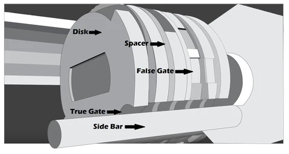

High-Security Locks
How Are They Different?
Disc-detainer locks use rotating discs rather than pins. You need a special follower tool and pick to rotate each disc so its true gate aligns with the sidebar.
Disc-Detainer Pick
This specialized pick has a narrow tip that fits into the keyway and a hooked end to engage each disc’s “true gate.” Apply light tension with your wrench, then gently rotate each disc until you feel it click into place. Once all discs are set, the sidebar will drop and the lock will turn.
Disc-Detainer Keyway
The keyway on a disc-detainer lock is unusually narrow and often uses a paracentric profile to block straight picks. Notice the deep grooves and tight walls that guide the key’s notches. Picking this requires a very slim follower or custom-profile pick to navigate the tightly toleranced channel.
Keyway & Tolerance
- Complex keyway cuts resist standard picks.
- Tighter manufacturing tolerances reduce internal play.